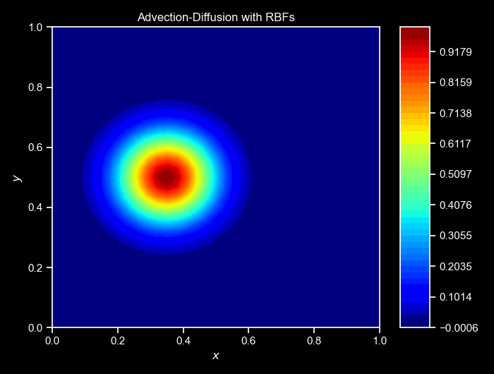

Examples
In this tutorial, we will simulate a Advection-Diffusion equation in 2D using Updes.
Step 1: Installation
Before we begin, let’s ensure we have the necessary package installed. Run the following command to install the updes package:
# Install the updes package
!pip install updesStep 2: Introduction
In this step, we’ll introduce the concept of the advection-diffusion equation and set up the parameters required for the simulation.
The advection-diffusion equation describes the transport (advection) of a quantity \(u(x,y,t)\), such as heat or fluid concentration while it is diffused in the medium. Mathematically, the advection-diffusion equation defined in a domain \(\Omega\) can be written as: \[ \frac{\partial u}{ \partial t} + \nabla \cdot (u \mathbf{v}) = k \nabla^2 u \] where:
- \(u\) is the quantity being transported,
- \(t\) is time,
- \(\mathbf{v}\) is the velocity vector,
- \(k\) is the diffusive constant, and
- \(\nabla^2\) is the Laplacian operator.
Let the domain be a unit square. The PDE above is complemented by periodic boundary conditions in both directions, i.e.,
- \(u(x, 0, t) = u(x, 1, t)\) and
- \(u(0, y, t) = u(1, y, t)\).
Additionally, we enforce their normal derivatives to be equal to each other:
- \(\frac{\partial u}{\partial x}(x, 0, t) = \frac{\partial u}{\partial x}(x, 1, t)\) and
- \(\frac{\partial u}{\partial y}(0, y, t) = \frac{\partial u}{\partial y}(1, y, t)\).
Now, let’s import necessary packages and set up the parameters for our simulation:
# Import necessary packages
import jax
import jax.numpy as jnp
from updes import *
# Parameters
DT = 1e-4 # Time step size
NB_TIMESTEPS = 100 # Number of time steps
PLOT_EVERY = 10 # Plot every nth time step
K = 0.08 # Diffusive constant
VEL = jnp.array([100.0, 0.0]) # Velocity vector
Nx = 25 # Number of grid points in x-direction
Ny = 25 # Number of grid points in y-directionStep 3: Creating a Square Cloud and Defining Initial Condition
Now, we’ll create a square computational domain and define the initial condition for the quantity being transported. Unlike Neumann n, Dirichlet d, or Robin r boundary conditions, the periodic boundary p* needs a special treatment. We must provide a common identifier for boundaries (or more generally, facets) on which the quantity \(u\) doesn’t change, i.e., p1 for the South and North facets and p2 for the West and East facets.
# Creating a square cloud
facet_types = {"South": "p1", "North": "p1", "West": "p2", "East": "p2"}
cloud = SquareCloud(Nx=Nx, Ny=Ny, facet_types=facet_types)The SquareCloud class can take arguments to scatter its nodes. It inherits from the Cloud class, which is a base class for all clouds in Updes, including clouds built from GMSH meshes. All Cloud instances provide methods to visualize the computational domain, its normals, and the solution. See the API for more on the Cloud class.
The computational domain is discretized into a grid of points surgically sorted based on the boundary type of the facet they belong to. We will used those sorted_nodes to define the initial condition which specifies the initial distribution of the quantity \(u\). Here, we’ll use a Gaussian signal:
\[ u(x, y, 0) = \exp\left(-\frac{(x - 0.35)^2 + (y - 0.5)^2}{0.1}\right) \]
# Defining the initial condition using a Gaussian distribution
def gaussian(x, y, x0, y0, sigma):
return jnp.exp(-((x-x0)**2 + (y-y0)**2) / (2*sigma**2))
xy = cloud.sorted_nodes
u0 = gaussian(xy[:,0], xy[:,1], 0.35, 0.5, 1/10)Step 4: Defining Differential and Right-hand Side Operators
For that, we discretize the problem along the time direction using a Backward Euler scheme. No need to discretize the problem along the spatial direction as Updes does it for you. The PDE becomes: \[ \frac{u^{n+1} - u^n}{\Delta t} + \nabla \cdot (u^{n+1} \mathbf{v}) = k \nabla^2 u^{n+1} \]
We can now isolate to define the differential and the right-hand side operators for the advection-diffusion equation for this implicit scheme to solve for \(u^{n+1}\) at each time step:
\[ \frac{u^{n+1}}{\Delta t} + \nabla \cdot (u^{n+1} \mathbf{v}) - k \nabla^2 u^{n+1} = \frac{u^n}{\Delta t} \]
def my_diff_operator(x, center=None, rbf=None, monomial=None, fields=None):
val = nodal_value(x, center, rbf, monomial)
grad = nodal_gradient(x, center, rbf, monomial)
lap = nodal_laplacian(x, center, rbf, monomial)
return (val/DT) + jnp.dot(VEL, grad) - K*lap
def my_rhs_operator(x, centers=None, rbf=None, fields=None):
return value(x, fields[:,0], centers, rbf) / DTThe signature of these two operators is paramounts, as defined in the API section for Operators
Note that in our custom differential operator, we used the nodal_value, nodal_gradient, and nodal_laplacian functions to compute the value, gradient, and Laplacian of the quantity \(u\) at the nodes, respectively. The nodal indicates that these values are tied to the center of the RBF when those functions are used. However, in our RHS operator, all centers are used, and thus the RBF is applied with respect to all nodes.
Also, our custom operators all take extra fiels as argument, these are known quantities that are passed to the operators via the PDE solver below.
Step 5: Setting Boundary Conditions
Updes needs a dictionary with the same keys as facet_types and values as the boundary conditions. Here, we will use the periodic boundary conditions for all facets. Since we are enforcing equality in periodic boundary conditions, we can use a lambda function that returns zero for all boundaries.
d_zero = lambda x: 0.
boundary_conditions = {"South": d_zero, "West": d_zero, "North": d_zero, "East": d_zero}Step 6: Solving the Advection-Diffusion Equation
Now that we have our operators defined and boundary conditions set, we’re ready to solve the advection-diffusion equation over time.
We’ll use a time-stepping approach to numerically integrate the equation forward in time. At each time step, we’ll apply the differential operator to compute the next state of the system.
u = u0
ulist = [u]
for i in range(1, NB_TIMESTEPS+1):
ufield = pde_solver_jit(diff_operator=my_diff_operator,
rhs_operator=my_rhs_operator,
rhs_args=[u],
cloud=cloud,
boundary_conditions=boundary_conditions,
max_degree=0)
u = ufield.vals
ulist.append(u)
if i <= 3 or i % PLOT_EVERY == 0:
print(f"Step {i}")
ax, _ = cloud.visualize_field(u, cmap="jet", title=f"Step {i}", vmin=0, vmax=1, figsize=(6,3),colorbar=False)
plt.show()The cornerstone of Updes is the pde_solver function. It takes the differential and right-hand side operators, the cloud, the boundary conditions, and the maximum degree of the polynomial to be added to our RBF approximation. The rhs_args argument is a list of known quantities that are passed to the right-hand side operator (we could have equally used diff_args if there was such a need). The pde_solver function returns a Field object that contains the solution at all the points in the domain. Note that we use the pde_solver_jit to directly leverage jax.jit’s compilation for faster (re)execution of this function.
Step 7: Visualization
After simulating the advection-diffusion equation and obtaining the results, it’s crucial to visualize the evolution of the quantity of interest over time. Visualization helps us understand the behavior of the system and interpret the simulation outcomes.
cloud.animate_fields([ulist],
cmaps="jet",
filename="adv_dif.gif",
figsize=(7,5.3),
titles=["Advection-Diffusion with RBFs"]);Again, the cloud class provides a method to animate the collected fields over time. The animate_fields method takes a list of fields’s trajectories to animate, the colormap to use, the filename to save the animation, the figure size, and the titles of the frames, and many others. The resulting simulation can be seen below:

NOTE: For a more complete version of this script, see the GitHub repository here.